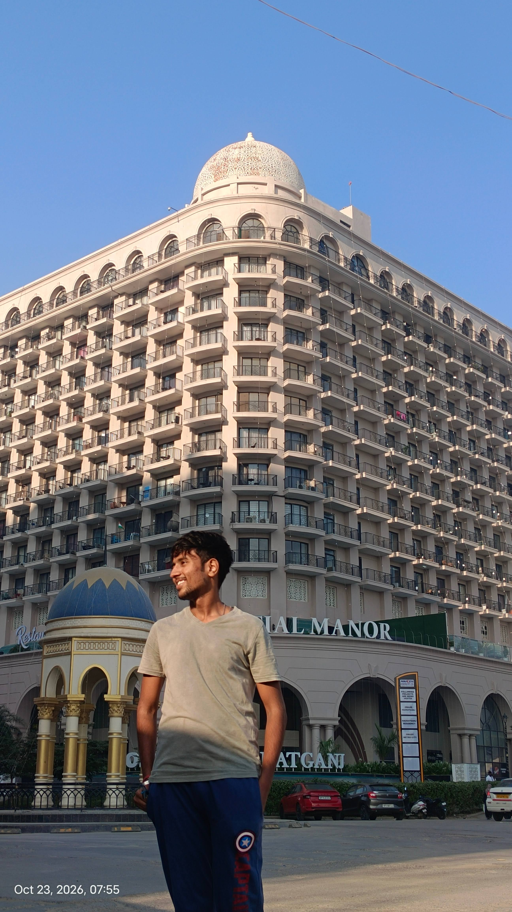
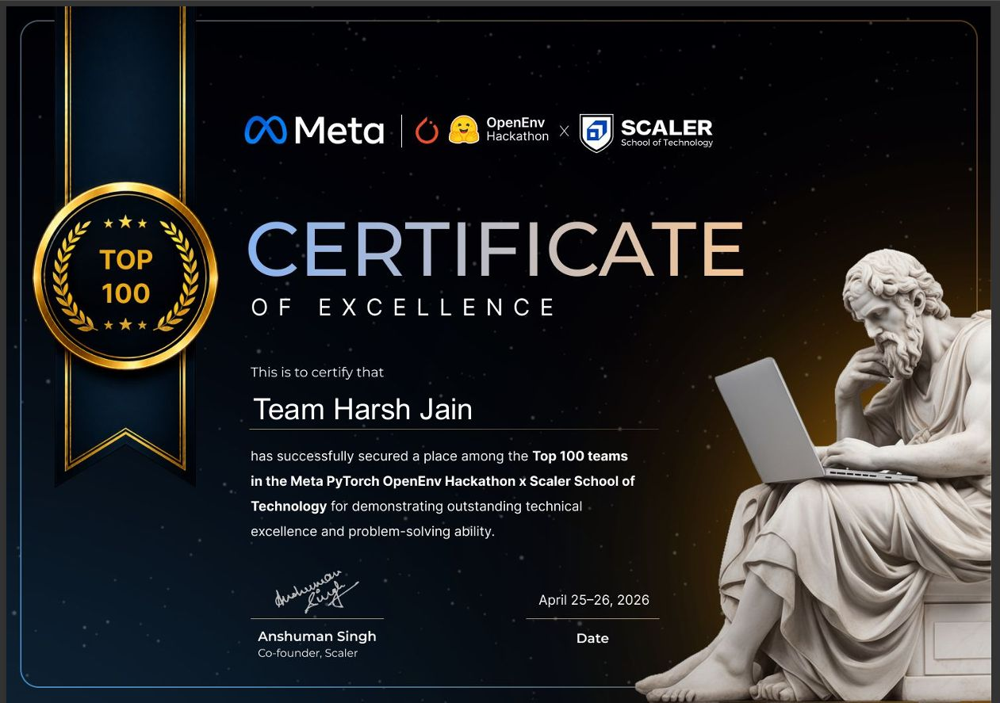
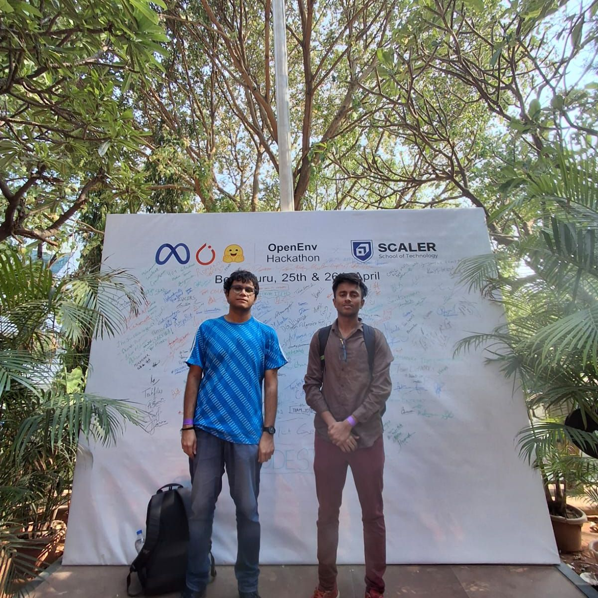

Airgap Graph
Follow the connections.
Find the evidence.
An offline-first platform to explore entities, trace relationships, and ask grounded questions about architectural and engineering drawings.
I’m Harsh. I turn complex ideas into useful AI systems — for understanding language, finding context, and making better decisions.

From the first question
to a working system.
Follow the connections.
Find the evidence.
A six-stage pipeline that maps a codebase and ranks architectural context. Reported benchmark: 75.86% fewer input tokens.
Flood early warning with automated climate data pipelines, hybrid forecasting, and a natural-language decision support copilot.
No projects in this view.
Teaming up with Sridip Basu, I secured a place among the Top 100 teams at the Meta PyTorch OpenEnv Hackathon × Scaler School of Technology.
Our team received a Certificate of Excellence recognizing technical excellence and problem-solving ability.


I like getting under the hood — then building something people can actually use.
I’m an M.Sc. Computer Applications (AI/ML) student at IIIT Lucknow. My work sits across retrieval, knowledge graphs, computer vision, forecasting, and AI copilots.
Before AI engineering, I worked in account management. That experience still shapes how I build: communicate clearly, understand the workflow, and make the next step easier.
Right now, I’m exploring CRM workflows and harness engineering.
A closer look at my résumé ↗Climate Resilience Observatory · Govt. of Uttar Pradesh
Architected and deployed FloodCast. Connected five climate and geospatial sources to forecasting and decision support.
Sunrise Traders · Pune
Client accounts, pipeline tracking, financial reporting, and ledger reconciliation.
IIIT Lucknow
Previously: B.Sc. (General), North Bengal St. Xavier’s College, Siliguri.
Top 100 teams · Meta PyTorch OpenEnv Hackathon × Scaler ↗
With Sridip Basu · Bengaluru · April 2026
AIR 786 · IIT JAM Mathematics 2025
Have a problem, an idea, or a good question?
I’d love to hear it.